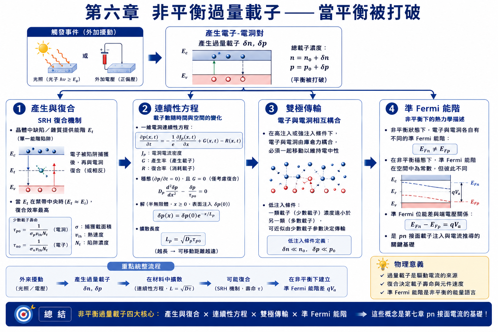
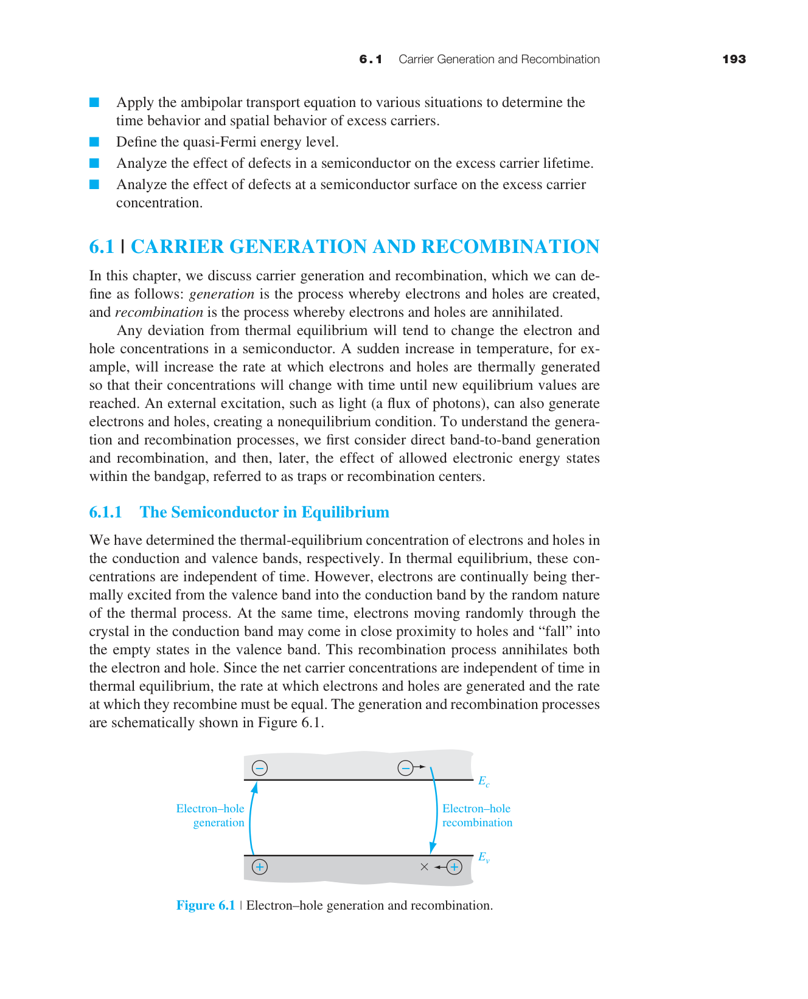
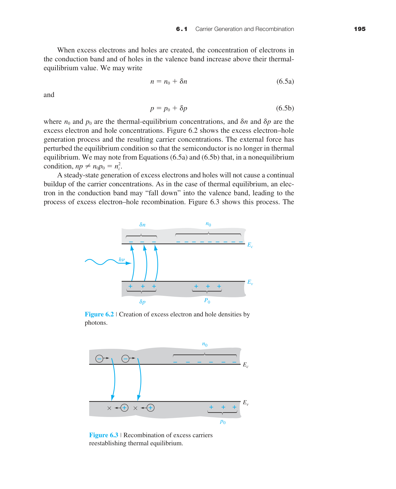
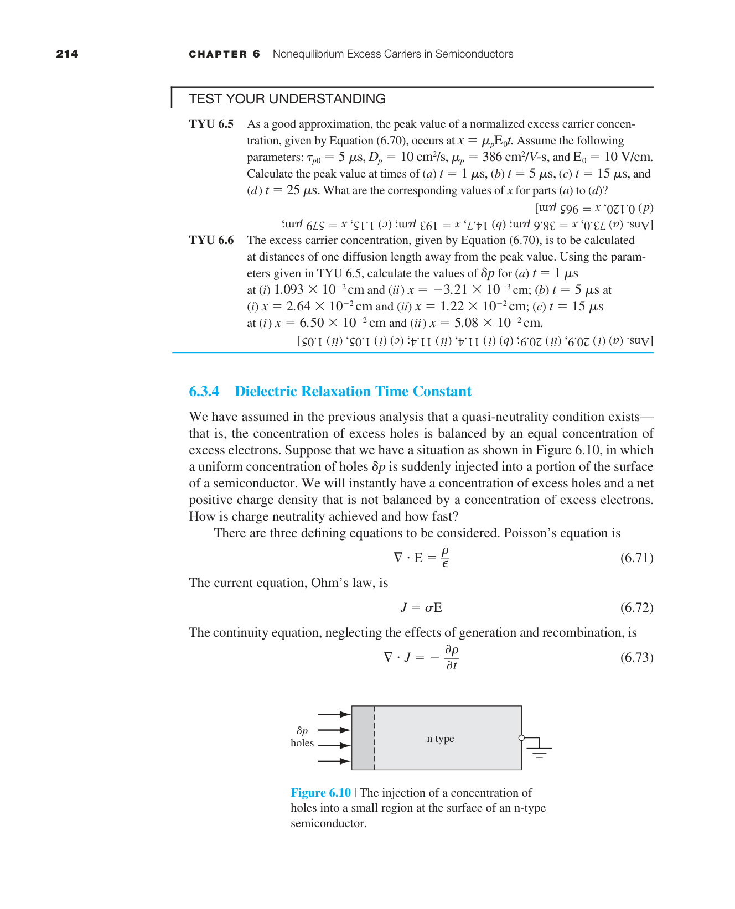
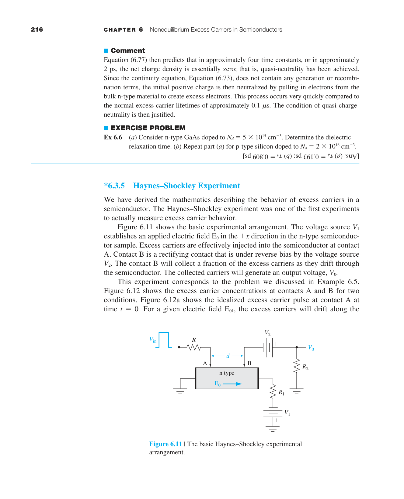
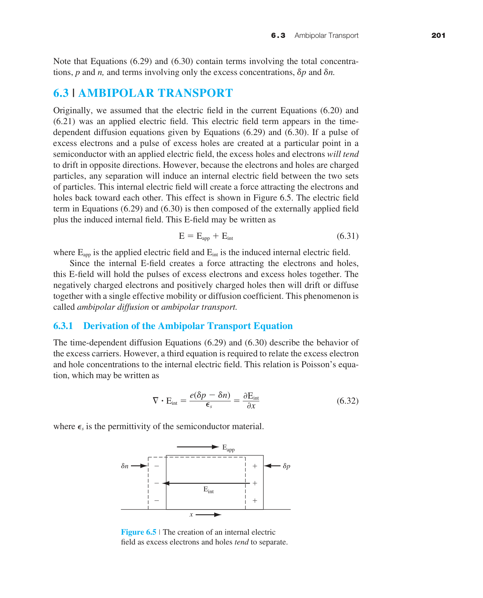
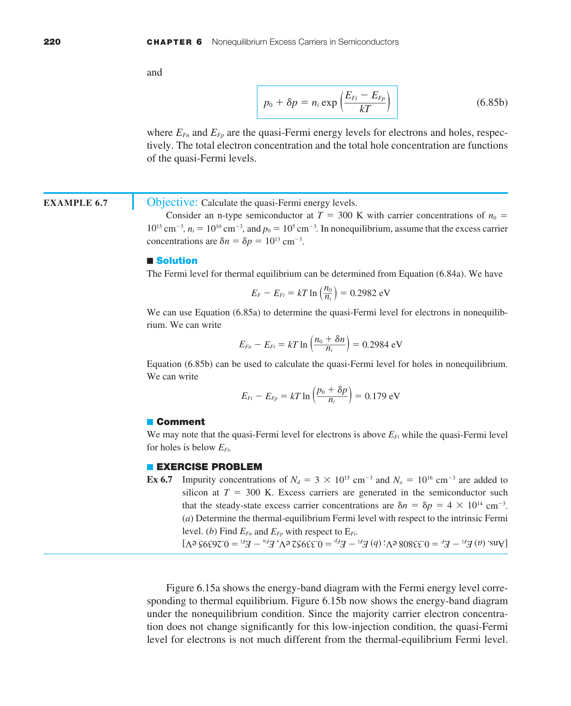
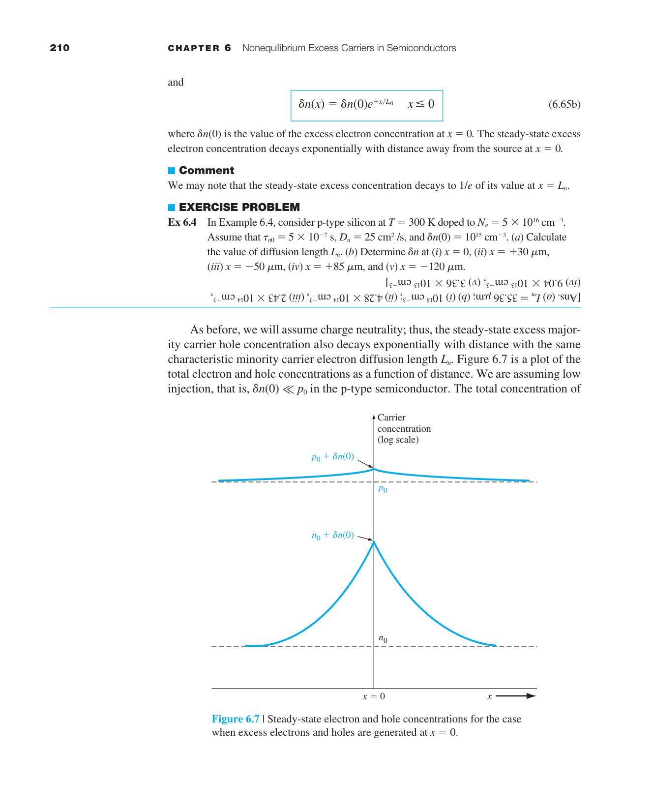
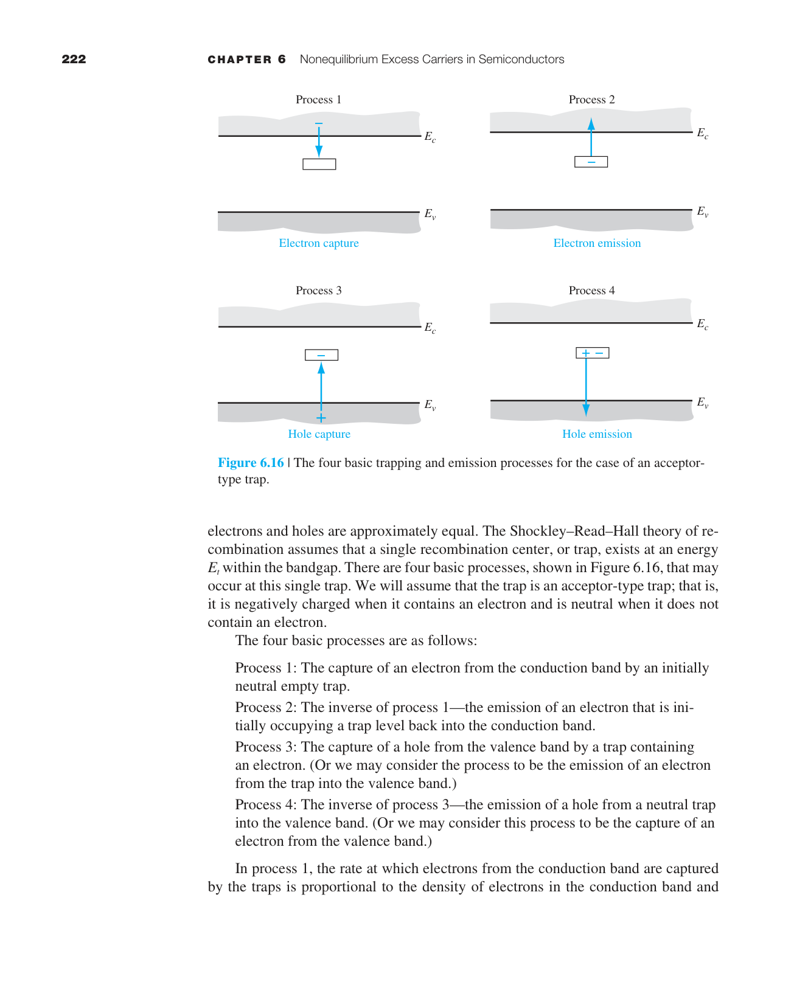
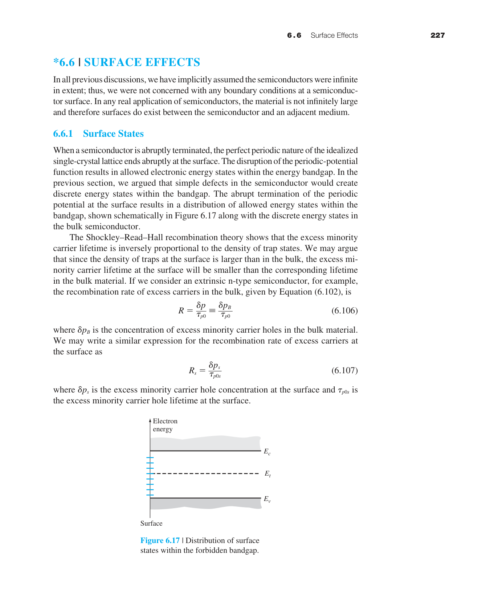

非平衡過量載子
第四章假設半導體處於熱平衡——沒有外部激發，$n_0 p_0 = n_i^2$。但實際的半導體元件永遠在非平衡狀態下運作。當你把 pn 接面順向偏壓時，你注入了過量少數載子。當光照射太陽能電池時，光子產生了電子-電洞對。當 MOSFET 的通道導通時，閘極電壓吸引了過量載子到表面。
本章回答：過量載子從哪裡來（產生）、去哪裡（復合）、如何移動（雙極傳輸）、活多久（壽命）、以及如何用 Fermi 統計描述非平衡狀態（準 Fermi 能階）。

6.1 載子產生與復合

在熱平衡下，熱產生率 $G_0$ 和復合率 $R_0$ 精確相等——電子不斷從價帶被熱激發到導帶（產生），同時導帶中的電子也不斷落回價帶（復合）。兩個過程速率相等→淨載子濃度不變。
但當你外加激發時（光照、電壓注入），產生率超過復合率→出現過量載子：
因為電子和電洞成對產生（一個電子跳到導帶必然在價帶留下一個電洞），過量電子和過量電洞的濃度相等：$\delta n = \delta p$。這稱為電中性條件。
低階注入 vs 高階注入
低階注入（low-level injection）：過量載子濃度遠小於多數載子熱平衡濃度。例如 n 型 Si（$n_0=10^{16}$ cm⁻³）中注入 $\delta n = \delta p = 10^{12}$ cm⁻³→$\delta n \ll n_0$（小了四個數量級）→多數載子濃度幾乎不變（$n\approx n_0$），但少數載子濃度變化劇烈（$p$ 從 $p_0=2.25\times10^4$ 變成 $\sim10^{12}$——增加了八個數量級）。
高階注入（high-level injection）：$\delta n$ 與 $n_0$（或 $p_0$）可比擬甚至更大。
SRH 復合理論——陷阱輔助復合
直接能帶間復合（電子從導帶直接跳到價帶）在間接能隙半導體（如 Si）中效率極低，因為需要聲子參與來保持動量守恆。實際上，Si 中的復合主要透過陷阱（trap）——能隙中的深層缺陷能階。

物理圖像：陷阱就像一個「中途島」——電子不會直接從導帶跳到價帶（能量差太大），而是先跳到陷阱能階 $E_t$（第一步），再從 $E_t$ 跳到價帶（第二步）。陷阱越靠近能隙中央（$E_t\approx E_{Fi}$），兩步的能量差都適中→復合效率最高。
6.2 連續性方程與擴散長度
第五章的漂移-擴散方程告訴我們載子如何移動。但移動中的載子還會產生和消失。連續性方程把這三者結合在一起：
逐項物理解讀：
- $\partial p/\partial t$：某點電洞濃度的時間變化率。穩態下為零。
- $-(1/e)\partial J_p/\partial x$：電流的散度——如果 $J_p$ 隨 $x$ 增大（流入多於流出），該點的電洞濃度增加。注意負號：$J_p$ 向右增大意味著更多電洞流出→濃度下降。
- $G_p$：產生率（cm⁻³s⁻¹）。光照射（光電效應）、碰撞電離（崩潰）、熱產生（空乏區中 $np < n_i^2$ 時）。
- $R_p = \delta p/\tau_{p0}$：復合率。過量載子以壽命 $\tau$ 為時間尺度衰減。$R_p$ 正比於 $\delta p$——載子越多，復合越快。
這就像一個浴缸的水位變化 = 水龍頭進水（產生）+ 排水孔出水（復合）+ 從隔壁浴缸流過來的水（電流）。
在半導體中，通常沒有外部產生（$G'=0$），也沒有電場（中性區），只剩下擴散和復合：
這個微分方程的解是 $\delta p(x) = \delta p(0)\,e^{-x/L_p}$，其中：
擴散長度的數值：對 Si 中的少數載子電洞（$D_p \approx 12$ cm²/s，$\tau_{p0} = 1$ µs）：$L_p = \sqrt{12\times10^{-6}} \approx 35$ µm。若 $\tau_{p0} = 1$ ms（高品質 FZ-Si）：$L_p \approx 1.1$ mm。這就是為什麼太陽能電池的基板厚度通常在 100–200 µm——必須薄於 $L_p$ 才能有效收集光生載子。

6.3 雙極傳輸 ⭐

一個常見的誤解是：過量電子和過量電洞各自獨立地擴散和漂移。這是錯的。
因為電子和電洞帶相反電荷，它們之間有庫侖吸引力。如果電子試圖擴散得比電洞快（電子的 $D_n$ 通常大於 $D_p$），就會產生微小的電荷分離→產生內建電場→這個電場拖慢電子、加快電洞→迫使兩者以相同的有效速度一起移動。這就是雙極傳輸（ambipolar transport）的本質。

雙極傳輸方程與單一載子的擴散方程形式完全相同，但用等效的雙極參數取代：
關鍵簡化（低階注入 n 型）：$D' \approx D_p$（雙極擴散係數≈少數載子擴散係數），$\mu' \approx \mu_p$。這意味著在 n 型材料中，過量載子的傳輸由少數載子（電洞）的參數決定。這是一個巨大的簡化——我們不需要解兩個耦合的傳輸方程，只需要解少數載子的擴散方程。
6.3.5 Haynes-Shockley 實驗——直接測量 $D$, $\mu$, $\tau$
1951 年，Haynes 和 Shockley 做了一個優美的實驗，首次直接測量了少數載子的遷移率、擴散係數和壽命——這三個參數是半導體物理的核心。
實驗裝置：一根長條形的 n 型 Ge 晶體。左端有一個「注入點」（用脈衝光或電脈衝注入過量電洞），右端有一個「探測點」（測量電洞到達時產生的電壓訊號）。晶體兩端施加一個縱向電場 $\mathcal{E}$。
測量原理：
① 遷移率 $\mu_p$：施加電場後，過量電洞的「波包」以漂移速度 $v_d = \mu_p \mathcal{E}$ 向探測點移動。測量注入到偵測的時間 $t_d$，已知距離 $d$ 和電場 $\mathcal{E}$：$\mu_p = d/(t_d \mathcal{E})$。
② 擴散係數 $D_p$：電洞波包在漂移的同時也會擴散（變寬）。偵測到的訊號 pulse 寬度 $\Delta t$ 反映了擴散程度：$D_p = (\Delta x)^2/(2t_d)$，其中 $\Delta x$ 是 pulse 的空間寬度。
③ 壽命 $\tau_{p0}$：隨著距離增加，pulse 的振幅逐漸衰減（因為復合）。從振幅衰減的速率可推算壽命。
6.4 準 Fermi 能階
在熱平衡下，整個系統只有一個 Fermi 能階 $E_F$。但在非平衡狀態下，電子和電洞不再處於同一熱平衡→必須引入兩個獨立的 Fermi 能階：
何時需要準 Fermi 能階？只要系統偏離熱平衡（有外加電壓、光照、或注入），$np \neq n_i^2$，就必須用 $E_{Fn}$ 和 $E_{Fp}$ 來分別描述電子和電洞的統計分布。在平衡態中性區，$E_{Fn} = E_{Fp} = E_F$（統一的 Fermi 能階）。在空乏區或有注入的區域，$E_{Fn} \neq E_{Fp}$。

物理意義：$E_{Fn} - E_{Fp}$ 的大小是偏離熱平衡程度的直接度量。平衡時 $E_{Fn}=E_{Fp}=E_F$。順向偏壓注入過量載子→$np>n_i^2$→$E_{Fn}>E_{Fp}$。反向偏壓抽取載子→$np 在 pn 接面中的行為：順向偏壓下，$E_{Fn}$ 在 n 側高、$E_{Fp}$ 在 p 側低。在空乏區中，$E_{Fn}$ 和 $E_{Fp}$ 逐漸趨近——但它們不在空乏區內對齊（這是常見的誤解）。它們在空乏區邊緣才恢復到統一的 $E_F$。$eV_a = E_{Fn}(n\text{側}) - E_{Fp}(p\text{側})$——施加的電壓直接對應於兩個準 Fermi 能階的差。
6.5 過量載子壽命
少數載子不會永遠活著——它們最終會與多數載子復合。從產生到復合的平均存活時間就是少數載子壽命 $\tau$。
SRH 復合理論——陷阱輔助復合的定量分析
在禁帶中存在深層陷阱能階（來自晶格缺陷、雜質、或界面態）。這些陷阱提供了「台階」——電子先從導帶落入陷阱，再從陷阱落入價帶。兩步的總速率比直接復合快得多（因為每步的能量差都適中）。

SRH 穩態壽命：
其中 $\sigma_p$ 是陷阱的捕獲截面（$\sim10^{-15}$ cm²），$v_{th}$ 是載子熱速度（$\sim10^7$ cm/s），$N_t$ 是陷阱密度（cm$^{-3}$）。對 $N_t = 10^{12}$ cm$^{-3}$：$\tau_{p0} = 1/(10^{-15}\times10^7\times10^{12}) = 10^{-4}$ s = 100 µs。
陷阱能階位置的重要性：最有效的復合陷阱位於禁帶中央（$E_t \approx E_i$）。為什麼？因為兩步過程（導帶→陷阱→價帶）的速率取決於兩步中較慢的一步。如果陷阱靠近導帶→第一步快但第二步慢（陷阱到價帶的能量差大）。如果陷阱在中央→兩步都適中→總速率最大。這就是為什麼 Au、Cu、Fe 等深能階雜質對 Si 的壽命影響巨大——它們的能階恰好在禁帶中央附近。
壽命與摻雜濃度的關係：典型 Si 的少數載子壽命在 $10^{-7}$ 到 $10^{-3}$ 秒範圍內：
| 材料 | 壽命範圍 | 限制因素 |
|---|---|---|
| 浮區（FZ）高純 Si | ∼1 ms | Auger 復合（高注入時） |
| Czochralski（CZ）Si | ∼1–10 µs | 氧相關缺陷（Czochralski 氧沉澱） |
| 含重金屬污染的 Si | ∼0.1–1 µs | 深能階雜質（Au, Cu, Fe） |
| 多晶 Si | ∼1–100 ns | 晶界復合 |

6.6 表面效應
到目前為止我們假設晶體是無限大的。但真實元件有表面——晶體突然終止的地方。表面有大量的懸鍵（dangling bonds）——未飽和的共價鍵，它們是極其有效的復合中心。
表面態密度 $D_{it}$：未處理的 Si 表面有 $\sim10^{15}$ cm$^{-2}$eV$^{-1}$ 的表面態——相當於每平方公分有 $10^{15}$ 個「復合陷阱」。以表面態均勻分布在禁帶中計算，等效的表面復合中心密度極高。

表面復合速度 $s$ 定義為表面處的復合率除以過量載子濃度：
$s$ 的物理意義：載子到達表面後被復合的「有效速度」。$s$ 越大→表面復合越劇烈。
| 表面處理 | $s$ (cm/s) | $D_{it}$ (cm⁻²eV⁻¹) |
|---|---|---|
| 未處理裸 Si 表面 | $10^3$–$10^5$ | $\sim10^{15}$ |
| 熱氧化 SiO₂（未退火） | $10^2$–$10^3$ | $\sim10^{11}$–$10^{12}$ |
| SiO₂ + 含氫退火 | 1–10 | $\sim10^{10}$ |
| Al₂O₃ 鈍化（PERC 太陽能電池） | < 5 | $\sim10^{10}$–$10^{11}$ |
| a-Si:H 鈍化（HIT 太陽能電池） | < 2 | $<10^{10}$ |
鈍化技術的物理原理：SiO₂ 鈍化的關鍵是氫原子——氫可以填補 Si/SiO₂ 界面處的懸鍵→將 $D_{it}$ 從 $10^{15}$ 降到 $10^{10}$。含氫退火（Forming Gas Anneal, FGA：400°C 的 H₂/N₂ 氣氛）是半導體製程的標準步驟。Al₂O₃ 的優勢是帶有固定負電荷→在 p 型 Si 表面形成反轉層→場效應鈍化（與化學鈍化互補）。
本章摘要
- 過量載子：$\delta n=n-n_0$，$\delta p=p-p_0$。電中性要求 $\delta n=\delta p$。
- 低階注入：$\delta n\ll n_0$（n 型）——最常見的元件操作條件。
- SRH 復合：陷阱輔助兩步驟復合。$E_t\approx E_{Fi}$ 時最有效。
- 連續性方程：濃度變化 = 傳輸 + 產生 − 復合。
- 擴散長度：$L_p=\sqrt{D_p\tau_{p0}}$——少數載子復合前的平均行進距離。
- 雙極傳輸：電子電洞庫侖耦合→一起移動。低階注入下由少數載子參數主導。
- 介電弛豫時間：$\tau_d=\epsilon/\sigma$∼皮秒——多數載子響應極快。
- 準 Fermi 能階：$E_{Fn}$ 和 $E_{Fp}$ 分離→度量偏離平衡程度。
- 載子壽命：SRH 理論決定 $\tau$ 與摻雜和陷阱密度的關係。
- 表面復合：懸鍵提供額外復合中心。鈍化可將 $s$ 降低數千倍。